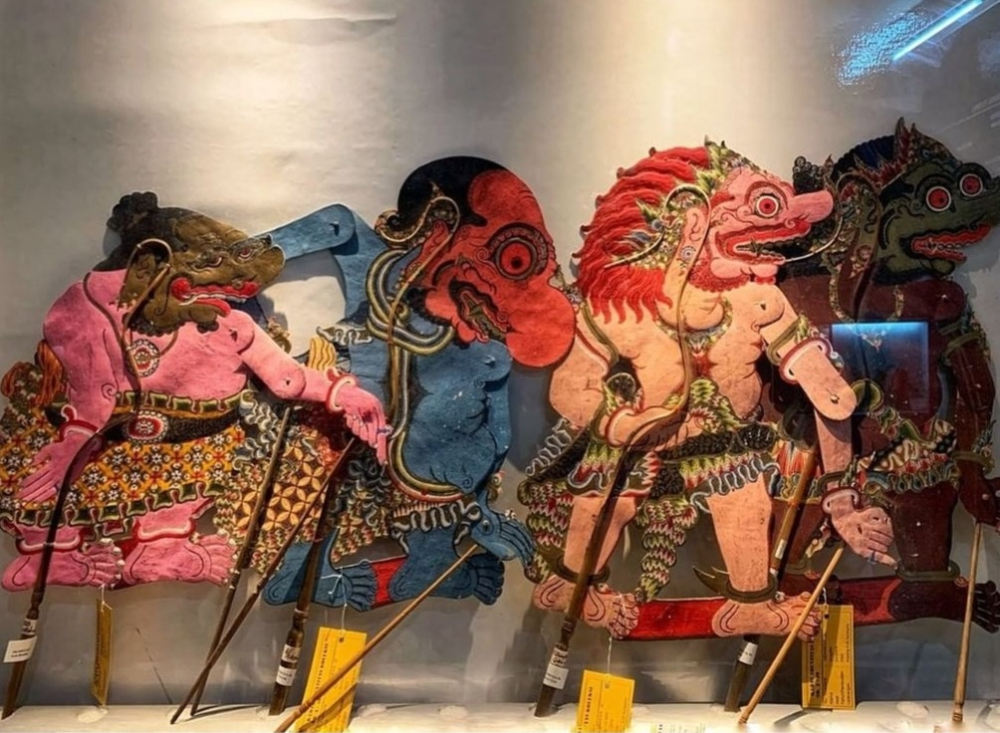

Galeri
Temukan lebih banyak foto museum wayang




Berbagai koleksi wayang yang terbuat dari kayu, kulit, dan bahan
lainnya dapat ditemukan di Museum Wayang. Memamerkan berbagai jenis wayang
dari berbagai daerah di Indonesia, dan dari mancanegara.
Selain itu, terdapat teater di dalam museum tempat pertunjukan Wayang tradisional digelar.
Pengunjung dapat menyaksikan seni yang memikat ini secara langsung, lengkap dengan musik gamelan,
cerita tradisional, dan manipulasi rumit dari boneka-boneka untuk menceritakan epik-epik kuno
dan cerita rakyat.
Lokasi
Masih berada dalam kawasan wisata Kota Tua, tepatnya di Jl. Pintu Besar
Utara No.27, Daerah Khusus Ibukota Jakarta 11110
Cara Menuju Lokasi
Jam Operasional
Selasa-Minggu | 9.00 WIB - 15.00 WIB
Tutup Senin, Libur Nasional, dan Cuti Bersama

"Dulu, bangunan (Museum Wayang) adalah gereja pertama di Batavia, tetapi banyak yang sudah berubah," kata Ira Latief, pemandu Wisata Kreatif Jakarta saat memimpin Kompas.com Travel Walking Tour pada Minggu (30/6/2024). Dahulu, gedung-gedung dekat tempat ibadah, umum dijadikan lokasi makam orang-orang penting.
Read More
Pernyataan itu dirangkum dalam sebuah artikel di Majalah HAI berjudul "Wayang, bukan sekedar boneka tak bernyawa" yang tayang pada 1981 lalu. Kesimpulan itu dia dapat setelah sekian lama mendalami seni wayang di Indonesia serta membandingkannya dengan seni-seni boneka di negeri-negeri lainnya.
Read More
Koleksi Museum Wayang dan Museum Tekstil mendapat perawatan. Hal ini guna menjaga koleksi agar tidak rusak. Perawatan terhadap sejumlah barang yang termasuk dalam kategori objek diduga cagar budaya (ODCB) tersebut bertujuan untuk tetap menjaga keutuhan dan menghindari terjadinya kerusakan karena usia benda.
Read More